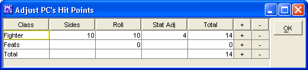

This window appears when the user selects the ‘HP’ button from the Summary or Class tabs.
This displays the breakdown of Hit Points per level and showing what the dice used (sides), what the roll was, any Constitution bonus’, what Hit Points gained by Feats, and what the grand total is.
To change the number of one of the levels of Hit Points, select the ‘+’ sign to add Hit Points and the ‘-‘ to subtract them. When all changes are finished select the ‘OK’ button.